销售与分销 SD（Sales and Distribution）
销售与分销 · 销售范围 · 定价 · 合作伙伴 · 销售流程 · 开票
1. 本模块导读
SD 主线是「销售组织结构 → 装运基础数据 → 定价与税 → 账户与更新组 → 主数据 → 销售流程」：销售组织 / 分销渠道 / 产品组及其分配 → 销售范围、销售办公室、销售组 → 装运（起运点、装载点、运送条件、装载组、拣配库存地点）→ 客户账户组的销售数据与合作伙伴确定 → 定价过程、客户与单据定价过程、定价过程确定 → 物料清单与排斥、销售单据物料确定 → 税收确定规则、客户与物料税分类、销项税税率（VK11）→ 物料账户分配组与销售收入科目 → 抬头/项目等级的更新组 → 主数据（物料销售视图 MM01、销售价格、订货方 VD01、收货方与分配 VD02）→ 销售流程（报价 VA21 → 销售订单 → 外向交货 VL01N → 发票 VF01 / 过账 VF02 → 原始凭证 → 订单清单 VA05 → 销售分析 MCTA）。
教材场景是一家「远东造船厂」按「颐宁公司」的报价创建销售订单，然后走交货、开票、过账到财务会计的完整链条。
- 销售范围（销售组织 + 分销渠道 + 产品组）是 SD 里最基本的「业务分区」
- 定价过程（条件类型、过程确定）与税收确定规则（客户税分类 + 物料税分类）
- 合作伙伴确定（售达方 / 收票方 / 付款方 / 送达方）与客户账户组的功能分配
- 销售流程：报价
VA21→ 订单 → 交货VL01N→ 发票VF01/VF02→ 会计凭证
文档中出现的 T-code：RVAA01 MM01 VK11 VD01 VD02 VA21 VL01N VF01 VF02 VA05 MCTA FS00 MIRO CK11N CK24 OBYC（完整说明见 T-code / IMG 路径速查）
2. 任务目录（48 个）
其中 46 个任务给出了原文档中的 IMG 后台菜单路径；带 后台 标注的是定制（配置）任务，带 前台 标注的是日常业务操作任务；没有标注的任务原文未指明，请按任务名自行判断（一般「定义/维护…参数」＝后台，「创建/输入/显示…凭证、订单、发票」＝前台）。
| 序号 | 任务 | 前后台 | 文档中的 T-code | 画面 | 手顺步 |
|---|---|---|---|---|---|
| 任务 01 | 定义销售组织 | 后台 | — | 6 | 4 |
| 任务 02 | 定义分销渠道 | 后台 | — | 4 | 4 |
| 任务 03 | 定义产品组 | 后台 | — | 4 | 3 |
| 任务 04 | 将销售组织分配给公司代码 | 后台 | — | 3 | 3 |
| 任务 05 | 将分销渠道分配给销售组织 | 后台 | — | 6 | 2 |
| 任务 06 | 将产品组分配给销售组织 | — | — | 3 | 3 |
| 任务 07 | 设置销售范围 | 后台 | — | 4 | 2 |
| 任务 08 | 定义销售办公室 | 后台 | — | 5 | 4 |
| 任务 09 | 定义销售组 | 后台 | — | 5 | 2 |
| 任务 10 | 给销售范围分配销售办公室 | 后台 | — | 5 | 3 |
| 任务 11 | 简单的排列组合，总共8种组合 | — | — | 0 | 0 |
| 任务 12 | 将销售组分配给销售办公室 | 后台 | — | 4 | 1 |
| 任务 13 | 将工厂分配给销售组织/分销渠道 | 后台 | — | 5 | 3 |
| 任务 14 | 定义起运点 | 后台 | — | 6 | 5 |
| 任务 15 | 定义装载点 | 后台 | — | 7 | 3 |
| 任务 16 | 将起运点分配给工厂 | 后台 | — | 4 | 4 |
| 任务 17 | 定义运送条件 | 后台 | — | 3 | 2 |
| 任务 18 | 定义装载组 | — | — | 3 | 3 |
| 任务 19 | 分配起运点 | 后台 | — | 3 | 2 |
| 任务 20 | 分配拣配库存地点 | 后台 | — | 3 | 3 |
| 任务 21 | 维护客户账户组的销售数据 | 后台 | — | 16 | 10 |
| 任务 22 | 定义定价过程 | 后台 | RVAA01 | 4 | 4 |
| 任务 23 | 定义客户和单据定价过程 | — | — | 3 | 3 |
| 任务 24 | 定义定价过程确定 | 后台 | — | 4 | 3 |
| 任务 25 | 激活销售单据的物料清单和排斥 | 后台 | — | 5 | 4 |
| 任务 26 | 维护销售单据的物料确定 | 后台 | — | 4 | 3 |
| 任务 27 | 定义税收确定规则 | 后台 | — | 2 | 1 |
| 任务 28 | 定义客户税分类和物料税分类 | 后台 | — | 7 | 4 |
| 任务 29 | 定义物料账户分配组 | 后台 | — | 5 | 5 |
| 任务 30 | 维护销售收入的总帐科目 | 后台 | — | 4 | 3 |
| 任务 31 | 在销售单据抬头等级分配更新组 | 后台 | — | 12 | 7 |
| 任务 32 | 在销售单据项目等级分配更新组 | 后台 | — | 13 | 4 |
| 任务 33 | 设置合作伙伴确定 | 后台 | — | 5 | 4 |
| 任务 34 | 维护物料主数据的销售视图 | 前台 | MM01 | 10 | 3 |
| 任务 35 | 维护物料的销售价格 | 前台 | VK11 | 5 | 4 |
| 任务 36 | 维护销项税税率 | — | VK11 | 4 | 3 |
| 任务 37 | 维护订货方主数据的销售视图 | — | VD01 | 13 | 6 |
| 任务 38 | 维护收货方的销售视图 | 前台 | VD01 | 6 | 3 |
| 任务 39 | 将收货方分配给订货方 | — | VD02 | 4 | 4 |
| 任务 40 | 创建报价 | — | VA21 | 9 | 2 |
| 任务 41 | 创建销售订单 | — | — | 6 | 5 |
| 任务 42 | 创建外向交货 | — | VL01N | 4 | 3 |
| 任务 43 | 创建发票凭证 | 前台 | VF01 | 3 | 3 |
| 任务 44 | 下达发票 | — | VF02 | 3 | 3 |
| 任务 45 | 点击原始凭证 | — | — | 1 | 1 |
| 任务 46 | 显示销售订单明细清单 | 前台 | VA05 | 2 | 1 |
| 任务 47 | 销售分析 | 前台 | MCTA | 4 | 3 |
| 任务 48 | 运行资产负债表 | 前台 | FS00 MIRO CK11N CK24 VL01N | 62 | 24 |
3. 手顺（逐个任务）
定义销售组织
后台6 画面 / 4 步-
按上一屏继续操作（画面 1067）

画面 1067image1078.png · 389×313 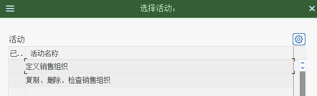
画面 1068image1079.png · 627×191 -
双击“定义销售组织”

画面 1069image1080.png · 231×544 -
按上一屏继续操作（画面 1070）

画面 1070image1081.png · 583×536 -
点击保存

画面 1071image1082.png · 466×221 
画面 1072image1083.png · 634×923 教材笔记按回车
定义分销渠道
后台4 画面 / 4 步-
企业结构－定义－销售和分销－定义、复制、删除、检查分销渠道

画面 1073image1084.png · 423×224 -
按上一屏继续操作（画面 1074）
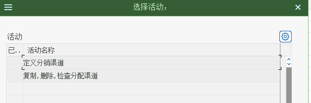
画面 1074image1085.png · 641×214 -
点击定义分销渠道
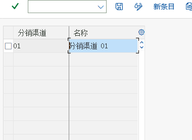
画面 1075image1086.png · 380×278 -
点击“新条目”
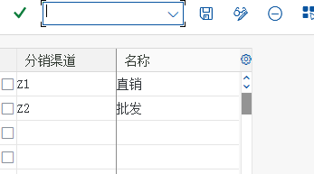
画面 1076image1087.png · 347×193
定义产品组
后台4 画面 / 3 步-
企业结构－定义－后勤常规－定义、复制、删除、检查产品组

画面 1077image1088.png · 348×249 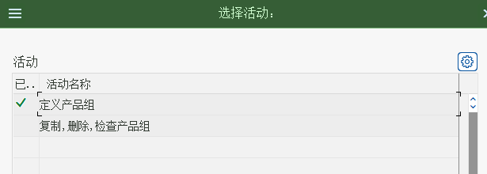
画面 1078image1089.png · 615×220 -
点击“定义产品组”
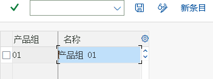
画面 1079image1090.png · 351×131 教材笔记Z1 铸钢泵 -
点击“新条目”点击“新条目”
Z2 增压泵
画面 1080image1091.png · 343×151
将销售组织分配给公司代码
后台3 画面 / 3 步-
解释： 在 SAP 中一个销售组织只可以分配给一个公司代码，但是一个公司代码可以有多个销售组织。但是销售组织分配给一个公司代码，只是意味着这个销售组织的销售收入和在财务上是属于这个公司代码的。如果是集团公司，销售组织仍然可以销售其他公司代码的产品，这样就构成了跨公司销售。

画面 1081image1092.png · 347×433 -
按上一屏继续操作（画面 1082）

画面 1082image1093.png · 632×183 -
直接录入公司代码CoCd为C999
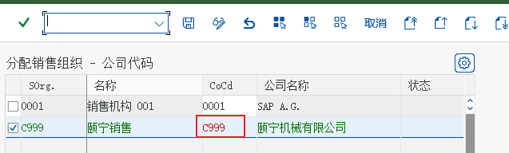
画面 1083image1094.png · 637×192
将分销渠道分配给销售组织
后台6 画面 / 2 步-
解释： 我们将“直销”和“批发”两个分销渠道分配给“颐宁销售组织”，这个分配意味着 “颐宁销售组织”可以从事“直销”和“批发”两种渠道的销售，其他的销售组织也可能从事这两种渠道的销售，所以分配是多对多的关系

画面 1084image1097.png · 392×438 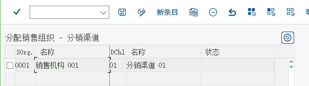
画面 1085image1098.png · 605×169 画面 1084image1097.png · 392×438 画面 1085image1098.png · 605×169 教材笔记点击新条目 -
按上一屏继续操作（画面 1088）

画面 1088image1099.png · 631×192 
画面 1089image1100.png · 747×205
将产品组分配给销售组织
3 画面 / 3 步-
解释： 本步中将“铸钢泵”和“增压泵”分配给“颐宁销售组织”。这意味着“颐宁销售组织”可以从事“铸钢泵”和“增压泵”的销售。其他销售组织也可能从事这两个产品组的销售，所以这个分配也是多对多

画面 1090image1101.png · 375×433 -

画面 1091image1102.png · 644×173 -
按上一屏继续操作（画面 1092）

画面 1092image1103.png · 558×159
设置销售范围
后台4 画面 / 2 步-
解释： SAP 把销售组织、分销渠道和产品组的组合称为“销售范围”，它的业务含义是某个销售组织通过某种分销渠道经营某个产品组。在颐宁销售组织中，我们可以分配通过直销 和批发经营两种产品组的销售，一共有四个销售范围，我们分别设置，销售范围也叫销售部门

画面 1093image1105.png · 375×416 教材笔记点击新条目 -
按上一屏继续操作（画面 1094）

画面 1094image1106.png · 775×283 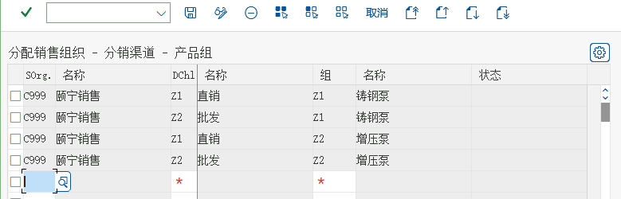
画面 1095image1107.png · 779×250 
画面 1096image1108.png · 795×281
定义销售办公室
后台5 画面 / 4 步-
企业结构－定义－销售和分销－维护销售办公室
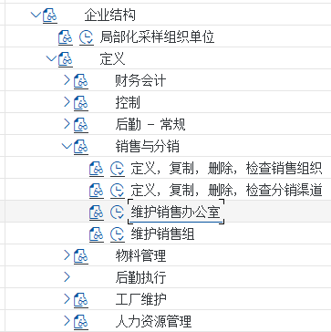
画面 1097image1109.png · 363×364 -

画面 1098image1110.png · 619×723 
画面 1099image1111.png · 394×161 -
Z001 颐宁北方销售公司

画面 1100image1112.png · 389×190 -
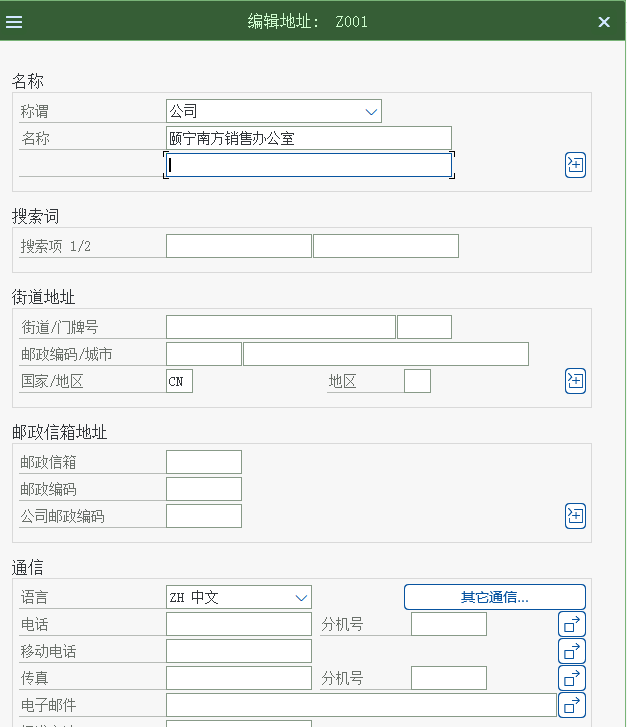
画面 1101image1113.png · 627×727
定义销售组
后台5 画面 / 2 步-
在 SD 中我们还可以定义“销售组”来统计和分析。在颐宁公司，我们定义东北、西北、东南、西南四个销售组。他们分别隶属于北方和南方销售办公室。销售组和销售办公室在 SD都是可选的组织结构，不是必选的
企业结构－定义－销售和分销－维护销售组
画面 1102image1116.png · 376×272 
画面 1103image1117.png · 415×139 画面 1102image1116.png · 376×272 画面 1103image1117.png · 415×139 教材笔记Z01 东北销售组 Z02 西北销售组 Z03 东南销售组 Z04 西南销售组 -
按上一屏继续操作（画面 1106）

画面 1106image1118.png · 339×201
给销售范围分配销售办公室
后台5 画面 / 3 步-
颐宁公司的北方和南方两个销售办公室都可以从事铸钢泵和增压泵的批发和直销，所以我们将这两个销售办公室分配给这四个销售范围

画面 1107image1119.png · 350×343 -

画面 1108image1120.png · 954×188 -
按上一屏继续操作（画面 1109）

画面 1109image1121.png · 953×326 
画面 1110image1122.png · 927×327 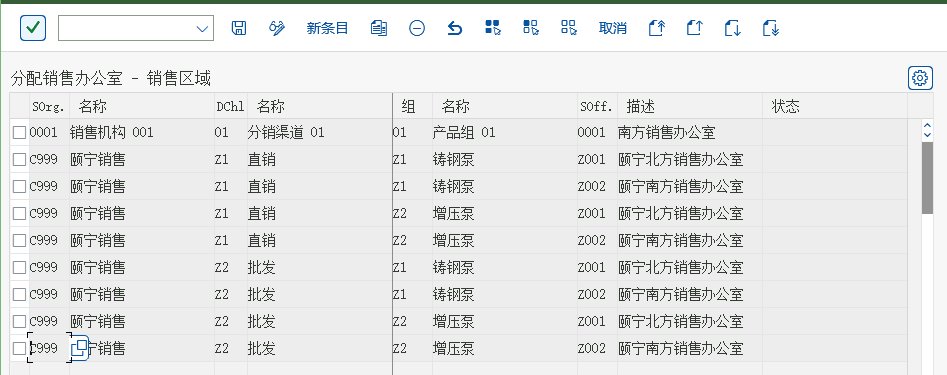
画面 1111image1123.png · 947×375
简单的排列组合，总共8种组合
0 画面 / 0 步将销售组分配给销售办公室
后台4 画面 / 1 步-
按上一屏继续操作（画面 1112）

画面 1112image1124.png · 386×421 
画面 1113image1125.png · 628×181 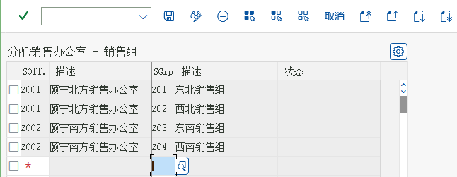
画面 1114image1126.png · 646×251 
画面 1115image1127.png · 613×255
将工厂分配给销售组织/分销渠道
后台5 画面 / 3 步-
企业结构－分配－销售和分销－分配销售组织-分销渠道-工厂

画面 1116image1128.png · 400×409 -
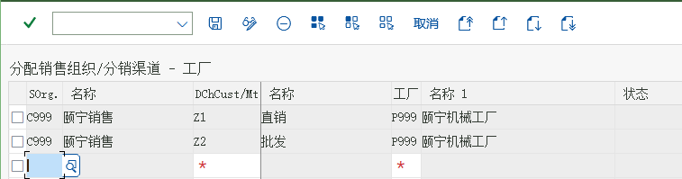
画面 1117image1129.png · 757×199 
画面 1118image1130.png · 873×231 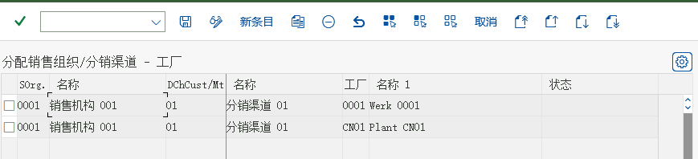
画面 1119image1131.png · 869×198 -
按上一屏继续操作（画面 1120）

画面 1120image1132.png · 674×190
定义起运点
后台6 画面 / 5 步-

画面 1121image1133.png · 437×156 
画面 1122image1134.png · 699×336 -
企业结构－定义－后勤执行－定义、复制、删除、检查起运点
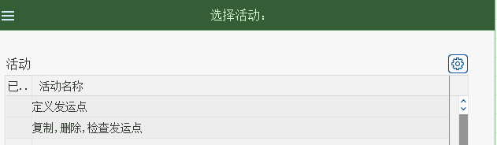
画面 1123image1135.png · 631×184 -
Z999 颐宁装运点
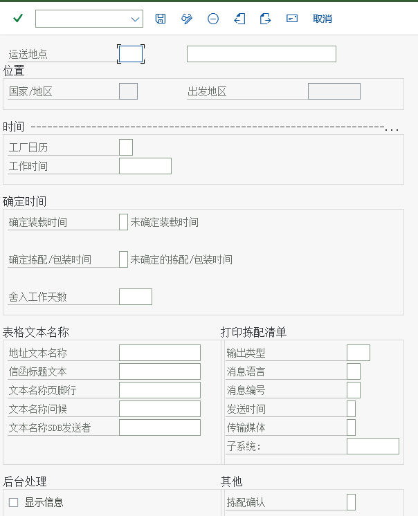
画面 1124image1136.png · 604×746 -

画面 1125image1137.png · 620×795 -
按上一屏继续操作（画面 1126）

画面 1126image1138.png · 619×539
定义装载点
后台7 画面 / 3 步-
解释： 起运点之下可以再细分装载点，来指明确定的装载地点，如一个卡车起运点中可能按仓库的大门分成三个装载点等等。本步骤我们将定义装载点。发货单中可以注明装载点。单装载点是 SD 中可选的组织结构。没有装载点的定义. SD 也能使用。
企业结构－定义－后勤执行－维护装载点
画面 1127image1141.png · 656×337 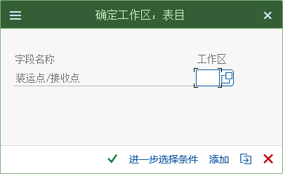
画面 1128image1142.png · 403×248 画面 1127image1141.png · 656×337 画面 1128image1142.png · 403×248 -
输入工作范围
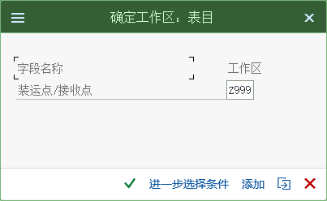
画面 1131image1143.png · 403×248 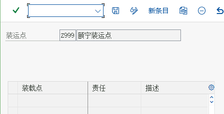
画面 1132image1144.png · 463×236 -
点击新条目，输入新的装载点

画面 1133image1145.png · 461×249
将起运点分配给工厂
后台4 画面 / 4 步-
解释： 一个工厂可以有几个起运点，如公路、水路等。一个起运点也可以是几个工厂公用的，所以两者是多对多的关系。

画面 1134image1146.png · 685×413 -
按上一屏继续操作（画面 1135）
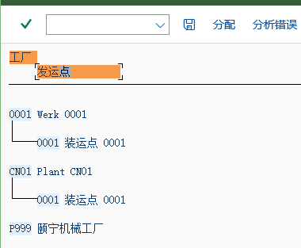
画面 1135image1147.png · 380×313 -
点击分配

画面 1136image1148.png · 599×358 -
按上一屏继续操作（画面 1137）

画面 1137image1149.png · 375×141
定义运送条件
后台3 画面 / 2 步-
后勤执行－装运－基本发运功能－装运点和收货点确认－定义运送条件

画面 1138image1150.png · 706×407 -
按上一屏继续操作（画面 1139）

画面 1139image1151.png · 261×233 
画面 1140image1152.png · 387×296
定义装载组
3 画面 / 3 步-
后勤执行－装运－基本发运功能－装运点和收货点确认－定义装载组
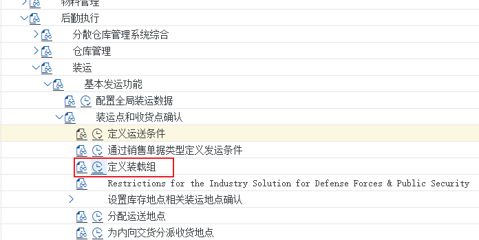
画面 1141image1153.png · 696×349 -
按上一屏继续操作（画面 1142）

画面 1142image1154.png · 356×143 -
Z999 叉车-颐宁
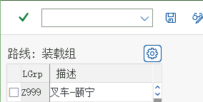
画面 1143image1155.png · 284×143
分配起运点
后台3 画面 / 2 步-
按上一屏继续操作（画面 1144）

画面 1144image1156.png · 627×342 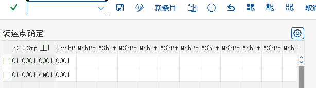
画面 1145image1157.png · 614×172 -
点击新条目
99 Z999 P999 Z999
画面 1146image1158.png · 637×186
分配拣配库存地点
后台3 画面 / 3 步-
解释： 在处理销售订单的过程中，SAP 系统除了可以自动建立起运点之外，还可以自动建立货物从哪个库存地点拣配。本配置可以根据起运点、工厂和存储条件（物料主数据的一个 参数）确定销售地点拣配的库存地点。本文中我们只需要选用起运点和工厂两个条件。

画面 1147image1159.png · 305×529 -
按上一屏继续操作（画面 1148）

画面 1148image1160.png · 361×182 -
解释： 前三个灰色字段是起决定作用的起运点、工厂和存储条件。

画面 1149image1161.png · 311×150
维护客户账户组的销售数据
后台16 画面 / 10 步| 项目 | 文档中的取值 |
|---|---|
| 双击 | K002 |
-
解释： 在本步骤中，我们将根据不停的客户账户组维护客户销售视图中哪些参数是必须输入的，哪些是不能输入的，哪些是可选输入的。
财务会计(新)－应收账款和应付账款－客户账户－主数据－创建客户主记录准备－定义带有屏幕格式的账户组（客户）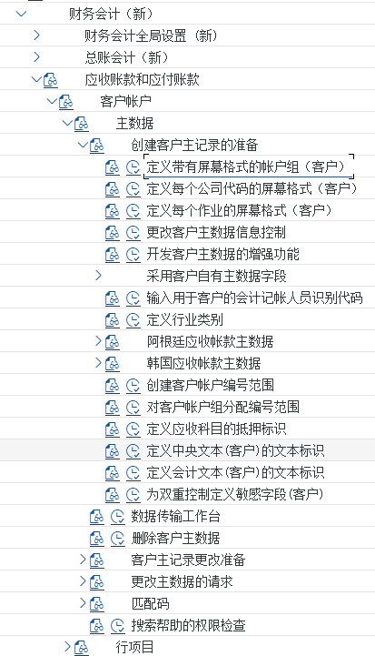
画面 1150image1162.png · 413×721 -
按上一屏继续操作（画面 1151）

画面 1151image1165.png · 399×559 
画面 1152image1166.png · 405×382 画面 1151image1165.png · 399×559 画面 1152image1166.png · 405×382 -
我们已经创建了两个客户账户组，在这里我们需要修改这两个客户账户组。双击 K001

画面 1155image1169.png · 357×371 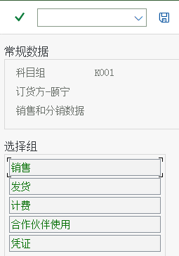
画面 1156image1170.png · 255×364 画面 1155image1169.png · 357×371 画面 1156image1170.png · 255×364 教材笔记双击“销售”进入如下设置如下 -
按上一屏继续操作（画面 1159）
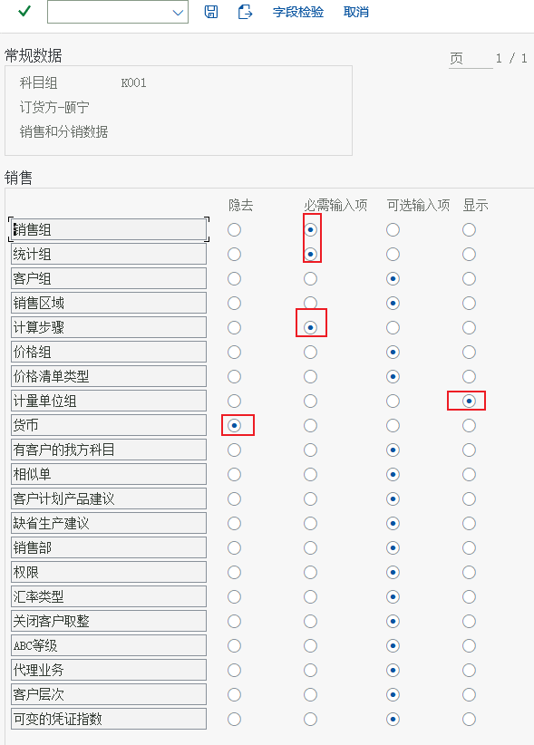
画面 1159image1171.png · 589×822 -
返回，点击“发货”

画面 1160image1172.png · 631×445 -
返回点击“计费”

画面 1161image1173.png · 587×480 -
按上一屏继续操作（画面 1162）

画面 1162image1174.png · 504×364 -
进入“销售数据”双击“销售”
设置如下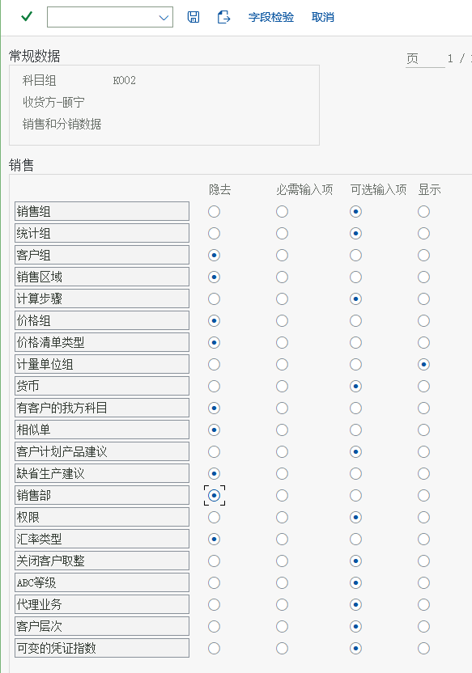
画面 1163image1175.png · 583×832 -
按上一屏继续操作（画面 1164）

画面 1164image1176.png · 556×440 -
返回，双击“计费”

画面 1165image1177.png · 593×466
定义定价过程
后台RVAA014 画面 / 4 步-
销售和分销－基本功能－定价－定价控制－定义并分配定价过程

画面 1166image1178.png · 324×487 -
弹出
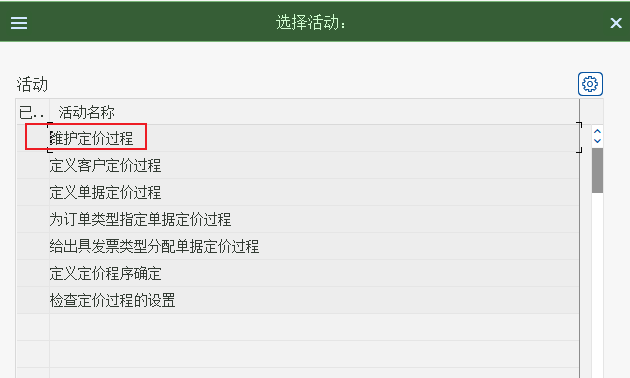
画面 1167image1179.png · 630×378 教材笔记点击维护定价过程 -
按上一屏继续操作（画面 1168）

画面 1168image1180.png · 754×398 -
选中过程“RVAA01 ”，点击左侧的“控制数据”
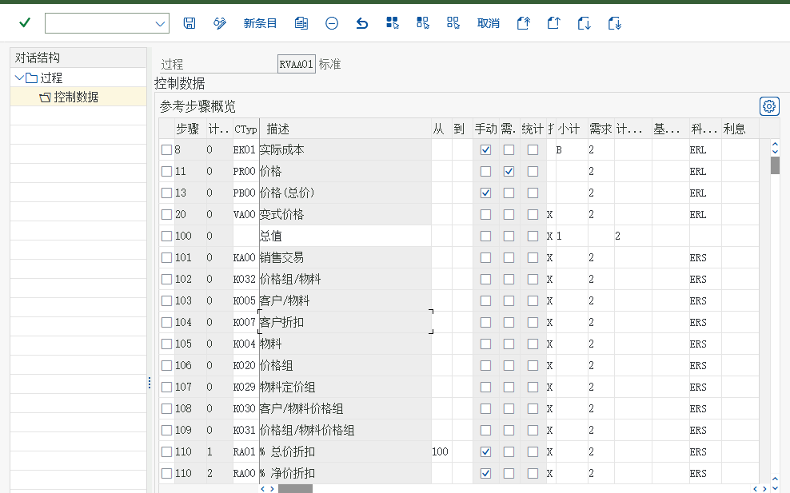
画面 1169image1181.png · 988×617 原理说明解释：“ RVAA01 标准”就是我们将要使用的系统预配置的定价过程。屏幕中 “ Ctyp”列， SAP 称之为价格“条件类型”，销售原价、折扣、返利、运费、保费、佣金、增值税等等都是条件类型。具体的价格是在条件类型中维护的，我们将在后面 6.34 维护物料的销售价格和 6.35 维护销项税税率中分别维护销售价格 PR00 和销项税 MWST 两个条件类型的价格。而定价过程中每个步骤对应的“账码”如 ERL 决定了这个条件类型记帐的科目，我们将在教材笔记6.29 维护销售收入的总帐科目中维护科目。
定义客户和单据定价过程
3 画面 / 3 步双击定义客户定价过程
-
销售和分销－基本功能－定价－定价控制－定义并分配定价过程

画面 1170image1182.png · 350×488 -
按上一屏继续操作（画面 1171）
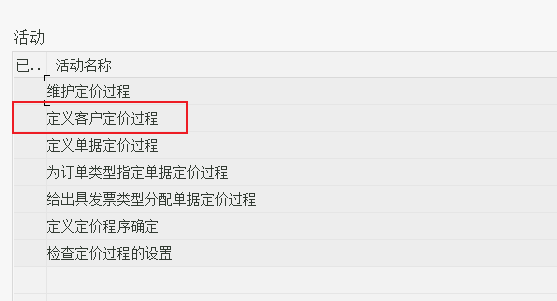
画面 1171image1183.png · 557×301 -
解释： 颐宁公司采用统一的定价过程，所以我们只需要使用系统标准的客户定价过程就可以了。这个客户定价过程参数我们将在定义客户主数据时 6.36 维护订货方主数据的销售视 图中分配。
返回
画面 1172image1184.png · 623×196 教材笔记双击定义单据定价过程教材笔记我们将使用 OR 订单，OR 订单使用 A 标准，所以不必新建。
定义定价过程确定
后台4 画面 / 3 步-
销售和分销－基本功能－定价－定价控制－定义并分配定价过程

画面 1173image1185.png · 329×277 -
按上一屏继续操作（画面 1174）

画面 1174image1186.png · 641×341 
画面 1175image1187.png · 610×302 教材笔记C999Z1Z1A1RVAA01 标准PR00价格C999Z1Z2A1RVAA01 标准PR00价格C999Z2Z1A1RVAA01 标准PR00价格C999Z2Z2A1RVAA01 标准PR00价格C999Z1Z1A1RVAA01 标准PR00价格C999Z1Z2A1RVAA01 标准PR00价格C999Z2Z1A1RVAA01 标准PR00价格C999Z2Z2A1RVAA01 标准PR00价格双击定义定价过程确定 -
我们来定义颐宁公司新的定价确认点击新条目

画面 1176image1188.png · 621×206
激活销售单据的物料清单和排斥
后台5 画面 / 4 步-
后勤执行－装运－基本发运功能－列表/排斥
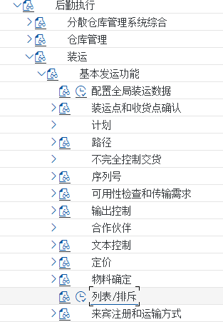
画面 1177image1189.png · 313×451 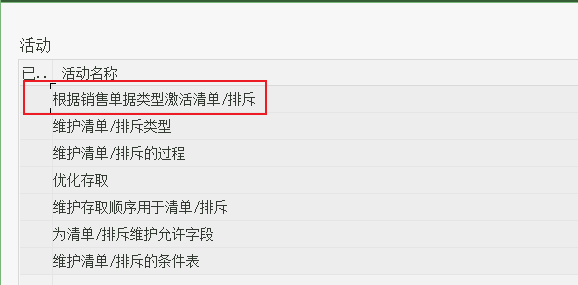
画面 1178image1190.png · 578×285 -
双击“根据销售单据类型激活清单/排斥”
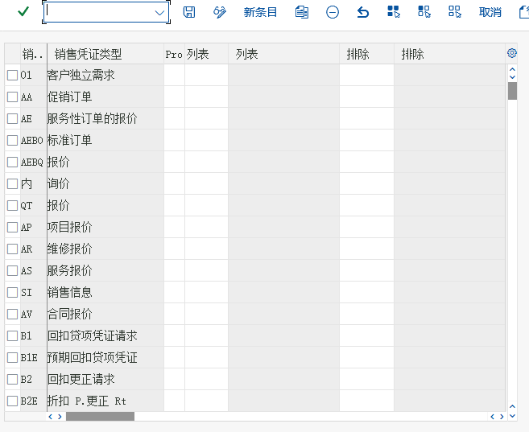
画面 1179image1191.png · 657×537 -
解释： SAP 使用和销售定价类似的技术（称之为条件技术）来定义“清单”和“排斥”。根据屏幕的 7 个步骤，用户可以定义灵活的“ 清单” 和“ 排斥” 规则。在本部分我们采用 A00001清单过程和 B00001 排斥过程，都是简单地按客户来决定哪些物料是可以销售（“ 清单”），哪些物料是不可以销售（“ 排斥”）
QT 和 OR 是本次要用的，我们将预定义的“清单”和“排斥”分配给他们。
画面 1180image1192.png · 681×307 -
按上一屏继续操作（画面 1181）
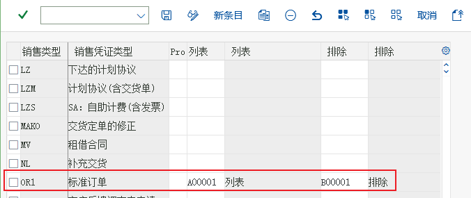
画面 1181image1193.png · 676×285
维护销售单据的物料确定
后台4 画面 / 3 步| 项目 | 文档中的取值 |
|---|---|
| 维护 | QT |
| 维护 | OR |
-

画面 1182image1194.png · 375×541 -
解释： 在有些情况下，销售订单需要输入的商品代码不是本公司标准的物料主数据代码，比如需要输入客户的物料代码，或者需要输入国际物品编码（IAN）等。在 SAP 里不需要将这些特殊的代码维护成物料主数据，而只需要维护一个 “ 物料确定” 的规则，让系统将这些特殊代码自动替换成物料主数据。“ 物料确定”规则是由销售单据的类型决定。
后勤执行－装运－基本发运功能－物料确定－分配过程到销售凭证类型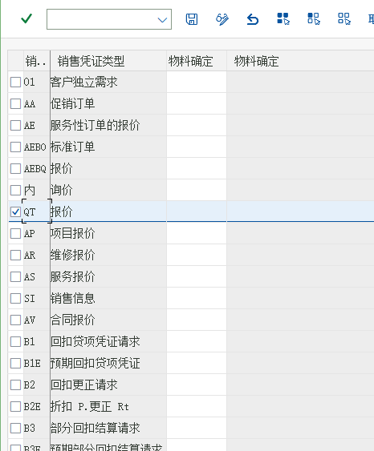
画面 1183image1195.png · 466×563 -
按上一屏继续操作（画面 1184）

画面 1184image1196.png · 505×277 
画面 1185image1197.png · 515×275
定义税收确定规则
后台2 画面 / 1 步-
按上一屏继续操作（画面 1186）

画面 1186image1198.png · 351×343 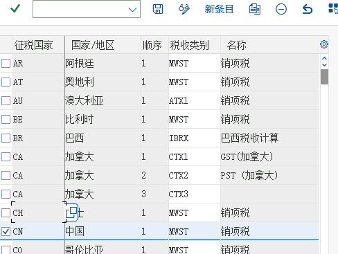
画面 1187image1199.png · 488×367 原理说明解释：在 SAP 标准系统里已经将 MWST 分配给 CN 了
定义客户税分类和物料税分类
后台7 画面 / 4 步-
解释： 在销售订单定价的过程中，销项税（条件类型 MWST）的具体税率是由客户和物料两个因素决定的。客户是通过客户主数据中的 “ 税分类” 参数决定的，而物料是通过物料主数据中的“税分类”参数决定的。

画面 1188image1202.png · 344×367 
画面 1189image1203.png · 640×225 画面 1188image1202.png · 344×367 画面 1189image1203.png · 640×225 -
点击“客户”税款

画面 1192image1204.png · 493×450 -
按上一屏继续操作（画面 1193）

画面 1193image1205.png · 505×376 教材笔记返回，双击“物料税款” -
税分类会维护在客户主数据中，在销售订单的处理过程会根据客户和物料中的税分类决定适用税率

画面 1194image1206.png · 502×538
定义物料账户分配组
后台5 画面 / 5 步-
解释： 在销售订单开票时，系统会自动生成发票的会计凭证，其中销售收入科目在系统中可以由物料、客户等因素决定。颐宁公司对于销售收入科目只需要按物料分成 “ 自制产品” 和 “贸易商品” 两个科目。物料对销售收入科目的决定作用是通过物料主数据中的 “ 账户分配组”实现的。
销售和分销－基本功能－科目分配/成本－收入账户确定－检查科目分配的相关主数据
画面 1195image1207.png · 396×607 -
按上一屏继续操作（画面 1196）

画面 1196image1208.png · 568×137 -
双击物料：账户分配组

画面 1197image1209.png · 357×165 -
按上一屏继续操作（画面 1198）
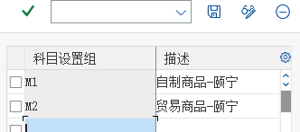
画面 1198image1210.png · 332×147 教材笔记M2 贸易商品-颐宁 -
M1 自制产品-颐宁
返回，双击“客户：科目分配组”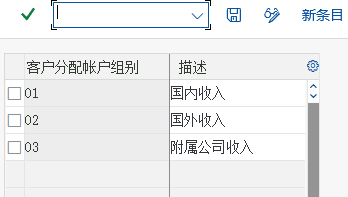
画面 1199image1211.png · 348×197
维护销售收入的总帐科目
后台4 画面 / 3 步-
销售和分销－基本功能－科目分配/成本－收入账户确定－分配总帐科目

画面 1200image1212.png · 342×362 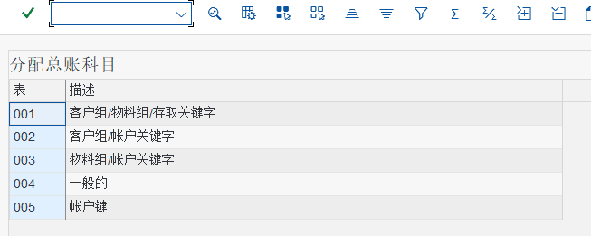
画面 1201image1213.png · 653×261 -
销售收入科目可能收到各种因素的影响，但颐宁公司的是由物料决定的。双击“表格 3 物料组/账户关键字”

画面 1202image1214.png · 518×839 -
新建
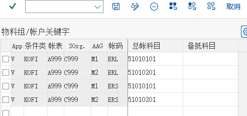
画面 1203image1215.png · 492×231
| V KOFI | A999 | C999 | M1 ERL 51010101 |
| V KOFI | A999 | C999 | M2 ERL 51010101 |
| V KOFI | A999 | C999 | M1 ERS 51010101 |
| V KOFI | A999 | C999 | M2 ERS 51010101 |
在销售单据抬头等级分配更新组
后台12 画面 / 7 步-
后勤常规－后勤信息系统－后勤数据仓库－更新－更新控制－设置：销售和分销－更新组－在抬头等级分配更新组

画面 1204image1216.png · 331×825 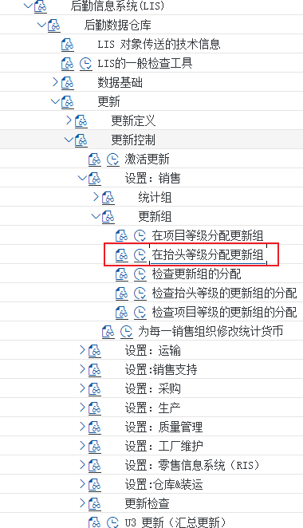
画面 1205image1217.png · 380×662 -
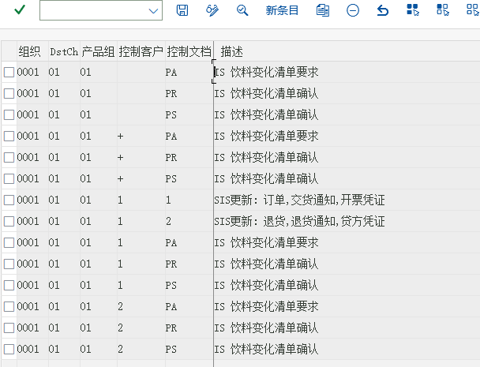
画面 1206image1218.png · 608×465 -
解释： SAP 后勤系统包含了很多分析工具和分析报表，对于销售和分销我们需要在本步骤和下一个步骤中激活业务数据对后勤信息系统的信息更新，这样这些报表才会包含数据。本步骤是销售单据抬头的更新规则，是由销售范围、客户和销售单据类型来决定的。
解释：上图是所有已经激活更新后勤信息系统的销售凭证抬头的清单点击新建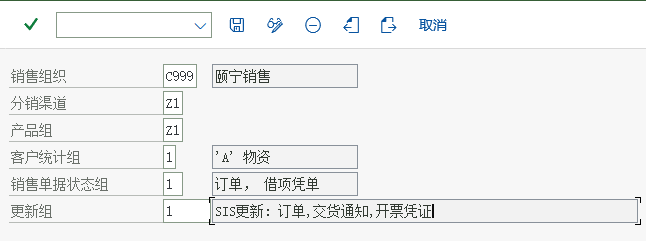
画面 1207image1219.png · 646×241 -
设置其他抬头等级分配更新组。
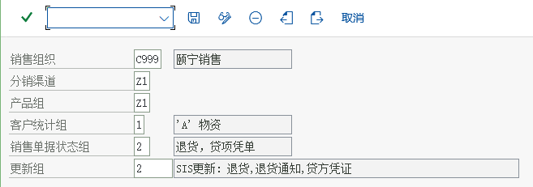
画面 1208image1220.png · 657×231 -
按上一屏继续操作（画面 1209）

画面 1209image1221.png · 657×226 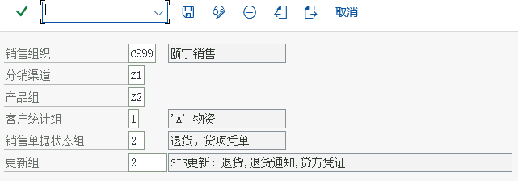
画面 1210image1222.png · 641×224 -
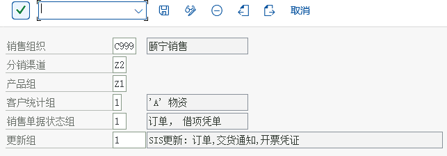
画面 1211image1223.png · 643×224 -
按上一屏继续操作（画面 1212）

画面 1212image1224.png · 494×229 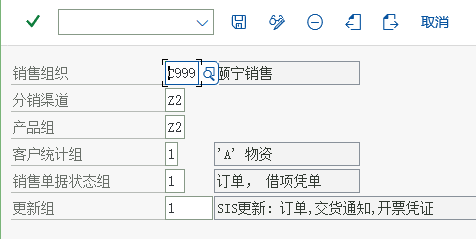
画面 1213image1225.png · 476×239 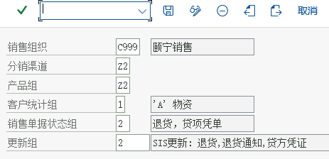
画面 1214image1226.png · 463×224 
画面 1215image1227.png · 643×355
| C999 | Z1 | Z1 | 1 | 1 | SIS 更新: 订单,交货通知,开票凭证 |
| C999 | Z1 | Z1 | 1 | 2 | SIS 更新: 退货,退货通知,贷方凭证 |
| C999 | Z1 | Z2 | 1 | 1 | SIS 更新: 订单,交货通知,开票凭证 |
| C999 | Z1 | Z2 | 1 | 2 | SIS 更新: 退货,退货通知,贷方凭证 |
| C999 | Z2 | Z1 | 1 | 1 | SIS 更新: 订单,交货通知,开票凭证 |
| C999 | Z2 | Z1 | 1 | 2 | SIS 更新: 退货,退货通知,贷方凭证 |
| C999 | Z2 | Z2 | 1 | 1 | SIS 更新: 订单,交货通知,开票凭证 |
| C999 | Z2 | Z2 | 1 | 2 | SIS 更新: 退货,退货通知,贷方凭证 |
在销售单据项目等级分配更新组
后台13 画面 / 4 步-
后勤常规－后勤信息系统－后勤数据仓库－更新－更新控制－设置：销售和分销－更新组－在项目等级分配更新组

画面 1216image1230.png · 408×676 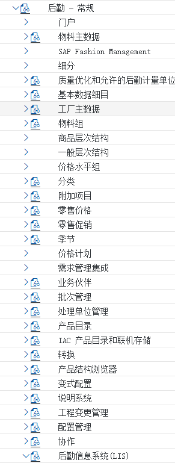
画面 1217image1231.png · 291×769 画面 1218image1232.png · 765×540 画面 1216image1230.png · 408×676 画面 1217image1231.png · 291×769 -

画面 1221image1233.png · 468×284 -
解释： SAP 后勤信息系统包含很多分析工具和分析报表。对于 SD，我们需要在本步骤和上步骤激活业务数据对后勤信息系统的信息更新，这些报表才会包含数据。本步骤是销售单据项目级别的更新规则，是由销售范围、客户、物料销售单据类型、行项目类别决定的。
解释：列表中是已经激活更新后勤信息系统的销售凭证行项目级别的清单，点击新条目 -
按上一屏继续操作（画面 1227）

画面 1227image1239.png · 657×284 
画面 1228image1240.png · 658×291

| C999 | Z1 | Z1 | 1 | 1 | 1 | 1 | SIS 更新: 订单,交货通知,开票凭证 |
| C999 | Z1 | Z1 | 1 | 1 | 2 | 2 | SIS 更新: 退货,退货通知,贷方凭证 |
| C999 | Z1 | Z2 | 1 | 1 | 1 | 1 | SIS 更新: 订单,交货通知,开票凭证 |
| C999 | Z1 | Z2 | 1 | 1 | 2 | 2 | SIS 更新: 退货,退货通知,贷方凭证 |
| C999 | Z2 | Z1 | 1 | 1 | 1 | 1 | SIS 更新: 订单,交货通知,开票凭证 |
| C999 | Z2 | Z1 | 1 | 1 | 2 | 2 | SIS 更新: 退货,退货通知,贷方凭证 |
| C999 | Z2 | Z2 | 1 | 1 | 1 | 1 | SIS 更新: 订单,交货通知,开票凭证 |
| C999 | Z2 | Z2 | 1 | 1 | 2 | 2 | SIS 更新: 退货,退货通知,贷方凭证 |
设置合作伙伴确定
后台5 画面 / 4 步-
销售和分销－基本功能－合作伙伴确定－设置合作伙伴确定

画面 1229image1241.png · 291×638 -
解释： 系统中合作伙伴的确定受很多因素影响，也非常灵活，本次我们只增加客户主数据的相关配置，其他的使用系统预定义的内容。

画面 1230image1242.png · 641×680 教材笔记双击“账户组－功能分配” -
双击“设置客户主数据的合作伙伴确认”
解释：和客户主数据相关的配置也有很多，我们基本采用预定义的内容，只是维护颐宁公司新建的客户账户组的功能分配，即各客户账户组可以扮演什么合作伙伴功能角色。
画面 1231image1243.png · 436×332 画面 1232image1244.png · 663×819 -

画面 1233image1245.png · 678×280
| SP | 售达方 | K001 | 订货方-颐宁 |
| BP | 收票方 | K001 | 订货方-颐宁 |
| PY | 付款方 | K001 | 订货方-颐宁 |
| SH | 送达方 | K001 | 订货方-颐宁 |
| SH | 送达方 | K002 | 收货方-颐宁 |
维护物料主数据的销售视图
前台MM0110 画面 / 3 步-
解释： 颐宁公司的产成品“铸钢泵 170－23”和贸易商品“高速增压涡轮泵”会对外销售，在使用这两个物料时需要维护这两种物料主数据的销售视图
后勤－物料管理－物料主记录－物料－创建（一般）－MM01 立即画面 1234image1246.png · 252×428 -
按上一屏继续操作（画面 1242）

画面 1242image1254.png · 633×591 
画面 1243image1255.png · 660×562

维护物料的销售价格
前台VK115 画面 / 4 步-
解释： 在前面，我们定义了销售价格的计算过程。在本步骤中，我们将实际维护价格表，为颐宁公司的“铸钢泵 170－230”和“高速增压涡轮泵”维护销售价格。SAP 是按照定价过程中的条件类型来维护的，本步骤维护的是条件类型 PR00 物料价格
后勤－销售和分销－主数据－条件－按条件类型选择－VK11－创建画面 1244image1256.png · 313×379 -
PR00 代表销售价格

画面 1245image1257.png · 468×143 画面 1246image1258.png · 501×221 原理说明解释：系统为销售订单在价格表中查找价格的时候，会遵循着一个顺序，比如先查找对这个客户，这种物料的专用价格，如果没有找到就用这种物料在这个分销渠道下的一般价格等等。这个查找顺序被称为“条件类型 存取顺序”。“ PR00”的存取顺序就是屏幕中的三个步骤。选中“具有审批状态的物料” -
按上一屏继续操作（画面 1247）

画面 1247image1259.png · 1147×317 -
如果有层级报价，双击物料进入层级定价

画面 1248image1260.png · 624×403
维护销项税税率
VK114 画面 / 3 步-
解释： 销项税也是在销售订单定价过程中计算的，条件类型 MWST。着也是作为一种价格维护，所不同的是通过税码来间接得到税率的。

画面 1249image1261.png · 294×141 画面 1250image1262.png · 501×221 -

画面 1251image1263.png · 1149×367 -
按上一屏继续操作（画面 1252）
画面 1252image1264.png · 781×556
维护订货方主数据的销售视图
VD0113 画面 / 6 步-

画面 1253image1265.png · 522×572 画面 1254image1266.png · 303×293 -
解释： K001 订货方－颐宁账户组下的客户只创建了财务数据，没有建立销售视图前台
后勤－销售和分销－主数据－业务伙伴－客户－创建－VD01
画面 1255image1267.png · 689×769 -
按上一屏继续操作（画面 1256）

画面 1256image1268.png · 621×704 画面 1257image1269.png · 668×673 教材笔记装运条件即“运送条件”和物料、工厂一起决定了交货的起运点 -
画面 1258image1270.png · 522×572 画面 1259image1271.png · 868×423 -
账户分配组，01 为国内收入。客户的账户分配组也可以影响自动确定销售收入的总帐科目，但是我们在6.29 维护销售收入的总帐科目中只维护了颐宁公司根据物料确定销售收入科
目，所以客户主数据中这个参数不起作用
画面 1260image1272.png · 522×572 -

画面 1261image1275.png · 522×572 
画面 1262image1276.png · 522×572 
画面 1263image1277.png · 522×572 画面 1261image1275.png · 522×572 画面 1262image1276.png · 522×572
维护收货方的销售视图
前台VD016 画面 / 3 步-
后勤－销售和分销－主数据－业务合作伙伴－客户－创建 VD01
-
远东造船三厂只是远东造船厂的销售订单的送达方，所以销售页面没什么要维护的。点击发送，进入
画面 1270image1282.png · 648×721 -
按上一屏继续操作（画面 1271）
画面 1271image1283.png · 661×514 教材笔记重复上述方法，把在渠道 Z1 产品组Z2 下的数据也维护了交货优先权 02 装运条件 99 税 1
将收货方分配给订货方
VD024 画面 / 4 步-
解释： 颐宁公司的客户远东造船厂的销售订单，收货方还有可能是它的分公司远东造船厂第三分公司。要处理这样的关系，我们在远东造船厂的客户主数据中必须将第三分公司作为“ 送达方”维护
后勤－销售和分销－主数据－业务合作伙伴－客户－更改－VD02
画面 1272image1284.png · 345×379 -
按上一屏继续操作（画面 1273）

画面 1273image1285.png · 515×383 -
点击销售区域数据
画面 1274image1286.png · 680×752 教材笔记切换到合伙人功能，添加 SH 20000000 -
按上一屏继续操作（画面 1275）
画面 1275image1287.png · 698×439
创建报价
VA219 画面 / 2 步-
解释： 远东造船厂有一个销售意向，要求颐宁销售组织提供 30 件铸钢泵 170-230，我们在本步骤来报价
后勤－销售和分销－销售－报价－VA21-创建
画面 1276image1288.png · 664×309 -
按上一屏继续操作（画面 1277）

画面 1277image1289.jpeg · 1213×484 
画面 1278image1290.png · 154×15 
画面 1279image1293.png · 882×439 
画面 1280image1294.png · 220×39 画面 1279image1293.png · 882×439 画面 1280image1294.png · 220×39 
画面 1283image1295.png · 851×426 画面 1284image1296.png · 168×15 教材笔记同样的方法创建其他报价单
创建销售订单
6 画面 / 5 步-
后勤－销售和分销－销售－报价－后继功能－V-01-订单

画面 1285image1297.png · 338×409 画面 1286image1298.png · 344×331 -
点击有参照创建

画面 1287image1299.png · 550×599 教材笔记点击复制 -
按上一屏继续操作（画面 1288）

画面 1288image1300.png · 651×390 -
系统显示无可用库存，点击继续（建议通过MB1C 501无订单收货后再做后续的操作）

画面 1289image1301.png · 1147×619 -
按上一屏继续操作（画面 1290）

画面 1290image1302.png · 178×37 教材笔记同样的方法将 20000001、20000000 均参照创建了
创建外向交货
VL01N4 画面 / 3 步-
后勤－销售和分销－装运和运输－外向交货－创建－单个凭证－VL01N
画面 1291image1303.png · 362×403 
画面 1292image1304.png · 449×395 教材笔记前台 -
后勤－销售和分销－装运和运输－外向交货－更改－VL01N-单个凭证

画面 1293image1305.png · 1151×426 -
按上一屏继续操作（画面 1294）

画面 1294image1306.png · 213×28
拣配并发货过账
创建发票凭证
前台VF013 画面 / 3 步-
后勤－销售和分销－出具发票－出具发票凭证－VF01-创建

画面 1295image1307.png · 636×603 -
按上一屏继续操作（画面 1296）

画面 1296image1308.png · 937×312 -
点击保存

画面 1297image1309.png · 188×33
下达发票
VF023 画面 / 3 步-
将上步的销售发票凭证过账到财务会计前台
后勤－销售和分销－出具发票－出具发票凭证－VF02-修改
画面 1298image1310.png · 643×376 -
按小旗子，屏幕下方会提示凭证已经传送到记账，点击会计

画面 1299image1311.png · 170×46 -
按上一屏继续操作（画面 1300）

画面 1300image1312.png · 375×356
点击原始凭证
1 画面 / 1 步显示销售订单明细清单
前台VA052 画面 / 1 步销售分析
前台MCTA4 画面 / 3 步-
本步骤需在 30 和 31 中事先激活，并在客户和物料主数据中维护统计组，这些标准分析才会有数据

画面 1304image1316.png · 825×409 
画面 1305image1317.png · 598×211 -
点击转换细分

画面 1306image1318.png · 228×356 -
画面 1307image1319.png · 642×196
运行资产负债表
前台FS00MIROCK11NCK24VL01NOBYC62 画面 / 24 步解决方法：
问题：因为不允许对公司代码 C999 科目 12010101 进行销项/进项税相关操作，所以税码 J1 无效消息号FS217
思路：所以就同意科目代码12010101允许进行销项/进项贺岁相关操作。执行：FS00---输入总账科目12010101，在控制数据中，税务类型中选择： “-”代表只允许进项税。
| 项目 | 文档中的取值 |
|---|---|
| ) SAP | NetWeaver |
-
会计－财务会计－总分类帐－信息系统－总帐报表－资产负债表/损益表/现金流－一般的

画面 1308image1320.png · 600×537 
画面 1309image1321.png · 1807×467 -
画面 1310image1322.png · 710×587 画面 1311image1323.png · 476×390 -
路径：SPRO -> 财务会计（新）-> 财务会计全局设置（新）-> 销售/购置税 -> 基本设置 -> 向计算程序分配国家

画面 1312image1324.png · 298×372 踩坑提醒不要分配到成本中心，会计年度没有激活的解决办法 -
按上一屏继续操作（画面 1313）

画面 1313image1325.png · 481×369 -
作业类型无法设置，也可以通过该办法解决
画面 1314image1341.jpeg · 1161×1756 
画面 1315image1342.jpeg · 827×72 画面 1316image1344.jpeg · 979×54 画面 1317image1345.png · 819×153 画面 1318image1346.jpeg · 136×51 画面 1319image1347.jpeg · 150×122 画面 1320image1348.jpeg · 122×27 
画面 1321image1349.jpeg · 241×27 画面 1322image1351.jpeg · 153×130 
画面 1323image1352.jpeg · 357×34 
画面 1324image1353.jpeg · 136×75 画面 1325image1354.jpeg · 146×28 画面 1326image1355.jpeg · 357×27 画面 1314image1341.jpeg · 1161×1756 画面 1315image1342.jpeg · 827×72 画面 1316image1344.jpeg · 979×54 画面 1317image1345.png · 819×153 画面 1318image1346.jpeg · 136×51 画面 1319image1347.jpeg · 150×122 画面 1320image1348.jpeg · 122×27 画面 1321image1349.jpeg · 241×27 画面 1322image1351.jpeg · 153×130 画面 1323image1352.jpeg · 357×34 画面 1324image1353.jpeg · 136×75 画面 1325image1354.jpeg · 146×28 画面 1326image1355.jpeg · 357×27 教材笔记��UI114 -
客户化错误：非当前业务交易组

画面 1340image1356.png · 466×248 -
按上一屏继续操作（画面 1341）

画面 1341image1357.png · 466×221 -
其二RK811XUP（对所有的集团）目前用 RK811UPD 代替前者

画面 1342image1358.png · 435×606 画面 1343image1359.png · 487×383 教材笔记物料R999-100 的强制帐户设置 (输入帐户设置类别) -
是CLIENT COPY 不完整造成的，
请运行se38一下，执行两个程序中的一个：其一RK811XST(仅在当前的集团），
画面 1344image1360.png · 1147×543 
画面 1345image1361.png · 366×364 -

画面 1346image1362.png · 461×330 -
按上一屏继续操作（画面 1347）

画面 1347image1363.png · 613×202 画面 1348image1364.png · 974×265 教材笔记不可能为条目A999 BSX CN01确立帐户 -
按上一屏继续操作（画面 1349）
画面 1349image1365.png · 1366×765 -
画面 1350image1367.png · 1155×1758 画面 1350image1367.png · 1155×1758 踩坑提醒因为不允许对公司代码 C999 科目 12010101 进行销项/进项税相关操作，所以税码 J1 无效 -
按上一屏继续操作（画面 1352）

画面 1352image1368.png · 1138×331 -
“+”代表只允许销项税。 “*”代表允许所有的税类型。
然后就能正常入发票付款了。注意，退出MIRO 重新进入！画面 1353image1369.jpeg · 995×836 教材笔记没有内部作业 LAB 1001 的价格可被确定 -
按上一屏继续操作（画面 1354）

画面 1354image1370.jpeg · 1485×855 -
通过CK11N要，按照如下方式维护价格，即可。
画面 1355image1371.png · 563×426 画面 1356image1372.png · 937×251 -
画面 1357image1373.png · 1018×490 -
退出CK11N，然后重新执行CK24

画面 1358image1374.png · 981×306 踩坑提醒物料 F999-100 不存在于存储地点 P999 003 -
按上一屏继续操作（画面 1359）
画面 1359image1375.png · 540×214 -
按上一屏继续操作（画面 1360）
-
按上一屏继续操作（画面 1365）

画面 1365image1381.png · 425×396 -
MB1C 501 录入期初库存，可以解决无法创建VL01N外向交货单的问题
画面 1366image1382.png · 629×647 画面 1367image1383.png · 557×418 踩坑提醒通过T-CODE OBYC ，按照如下方式维护，可以解决此问题 -
按上一屏继续操作（画面 1368）

画面 1368image1384.png · 423×340 
画面 1369image1385.jpeg · 867×633

{kind=link}
{kind=link}
{kind=link}
{kind=link}
{kind=link}
{kind=link}
{kind=link}
{kind=link}
{kind=link}
{kind=link}
{kind=link}
{kind=link}
{kind=link}
{kind=link}
{kind=link}
{kind=link}
{kind=link}
{kind=link}
{kind=link}
{kind=link}
{kind=link}
{kind=link}
{kind=link}
{kind=link}
{kind=link}
{kind=link}
{kind=link}
{kind=link}
{kind=link}
{kind=link}
{kind=link}
{kind=link}
{kind=link}
{kind=link}
{kind=link}
{kind=link}
{kind=link}
{kind=link}
{kind=link}
{kind=link}
{kind=link}
{kind=link}
{kind=link}
{kind=link}
{kind=link}
{kind=link}
{kind=link}
{kind=link}
{kind=link}
{kind=link}
{kind=link}
{kind=link}
{kind=link}
{kind=link}
{kind=link}
{kind=link}
{kind=link}
{kind=link}
{kind=link}
{kind=link}
{kind=link}
{kind=link}
{kind=link}
{kind=link}
{kind=link}
{kind=link}
{kind=link}
{kind=link}
{kind=link}
{kind=link}
{kind=link}
{kind=link}
{kind=link}
{kind=link}
{kind=link}
{kind=link}
{kind=link}
{kind=link}
{kind=link}
{kind=link}
{kind=link}
{kind=link}
{kind=link}
{kind=link}
{kind=link}
{kind=link}
{kind=link}
{kind=link}
{kind=link}
{kind=link}
{kind=link}
{kind=link}
{kind=link}
{kind=link}
{kind=link}
{kind=link}
{kind=link}
{kind=link}
{kind=link}
{kind=link}
{kind=link}
{kind=link}
{kind=link}
{kind=link}
{kind=link}
v
客户化错误：非当前业务交易组
将已经创建的采购订单全部删掉，然后修改物料的会计视图1中的“评估类”，比如，本书中的原材料为3000，注意维护的本期同时，需要维护上期和上一年度的评估类，具体维护方式，如下图所示（建议在创建物料时，解决如下问题）：
MMSC维护
VL01N时【对于直到所选日期的交货没有到期的计划行】解决方案将选择日期与订单保持一致
4. 关于截图与取值
S4.docx 中作者在真实系统里截取的中文界面画面（原始文件名 imageNNN.png 保留在每张图的图注里，可与 Word 原文逐张对照）。本站没有对这些画面做任何重绘或模拟。C999、公司名「颐宁机械有限公司」、工厂 F999、物料 R999-100/T999-100/F999-100、客户 K001/K002 等）都来自原作者的教材环境。照着手顺做时，操作顺序与配置点可以照搬，具体编号/名称请换成你自己系统里的值；遇到与文档不同的提示消息，先看「排错与踩坑」页里原文档记录的同类问题。